Here are step-by-step instructions for how to make an origami x-wing, as seen at Picocon 22, and demonstrated by Alex Crosse. He is a proper Origami club person; the terribly un-technical descriptions are entirely my (Dormouse's) fault.
This was done using a 15cm-square of thin paper, coloured on one side and white on the other - the x-wing ends up coloured all over.
When making folds, try to be as precise as possible, particularly when folding a corner in half! Some of the folds get very thin at the end.
 Start with the coloured side (here blue) face up.
Start with the coloured side (here blue) face up.
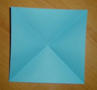
Fold along one diagonal, open it up, then fold along the other. In this picture, the folds are such that that paper forms a cup (rather than a hill).
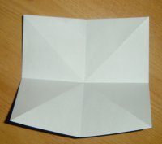
Turn the paper over, and fold horizontally, open up again, then vertically. These folds end up in the opposite direction to the previous ones.
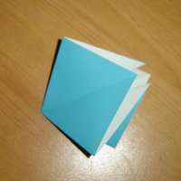
Squash the paper together, inwards along the folds, so that this square shape is formed.
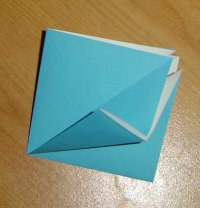
Fold one of the closed flaps towards the centre
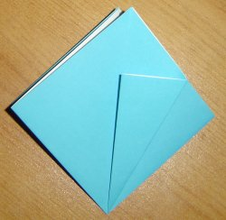
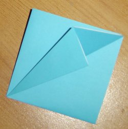
Then unfold the flap, and fold it back on itself, the other way.
 Unfold the flap again, and open up the inside and squash it flat.
Unfold the flap again, and open up the inside and squash it flat.
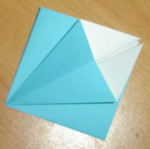
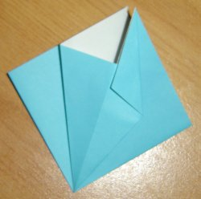
Fold one white side down to the centre.
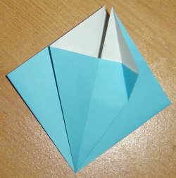
Unfold it.
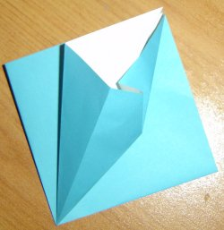
Tuck it under the bit that it just folded over.
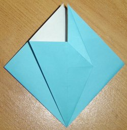
Push it under further, so that the diagonal it lies under goes right to the centre.
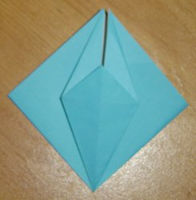
Repeat on the left.
 Repeat with all the other 3 folds.
Repeat with all the other 3 folds.
 Fold the small central point downwards. Also do this on the opposite side - but leave the remaining 2 central points as they are.
Fold the small central point downwards. Also do this on the opposite side - but leave the remaining 2 central points as they are.
 Rotate by 90deg so that the 'legs' are nearest you
Rotate by 90deg so that the 'legs' are nearest you
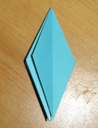
Fold over one side flap, like turning the page of a book
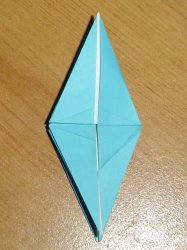
Fold the 'leg' near you upwards, folding horizontally in the middle
 Fold the 'leg' back down
Fold the 'leg' back down
 Pinch the leg inward towards the centre, as shown
Pinch the leg inward towards the centre, as shown
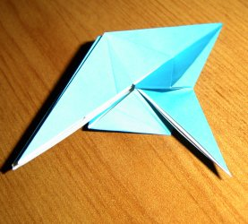
Continue pinching so that the leg ends up folded inside and sticking out at 90 degrees.
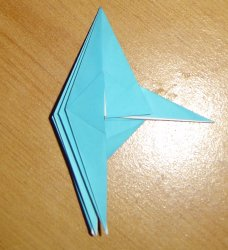
Finished folding it flat.
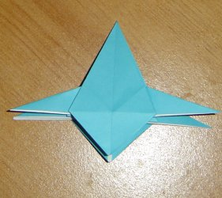
Repeat for the other 3 legs.
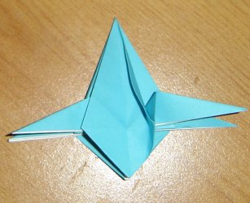
Probably the most fiddly stage: Fold the long side in half, into the centre. This will start to drag the top line of the leg with it, don't worry.
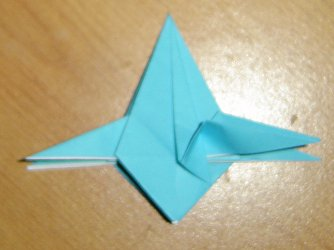
Finish folding flat
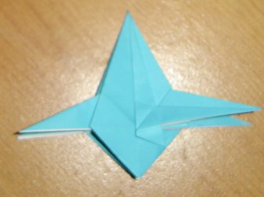
Fold the leg flat too - this folds it in half
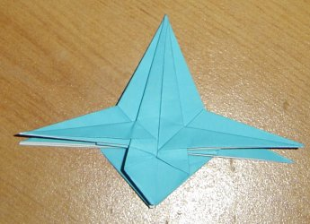
Repeat on the other side
 And again for all the others. Then get it so that the engines at the bottom are split vertically down the middle, as shown.
And again for all the others. Then get it so that the engines at the bottom are split vertically down the middle, as shown.
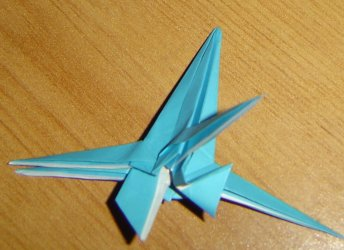
Fold one engine back into itself, between the wings
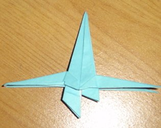
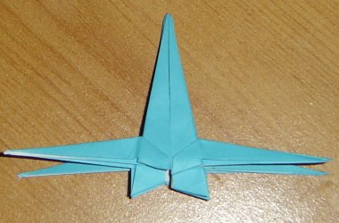
Fold the 2nd engine too
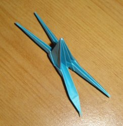
Open up the fold along the top part of the wings
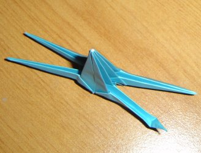
Reverse-fold the wingtip back and inside, as shown in these 3 pictures
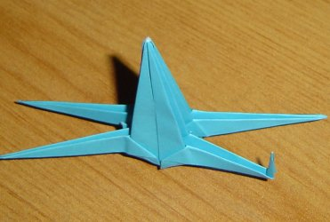

 Repeat with the other 3 wings
Repeat with the other 3 wings
 Finished! :)
Finished! :)